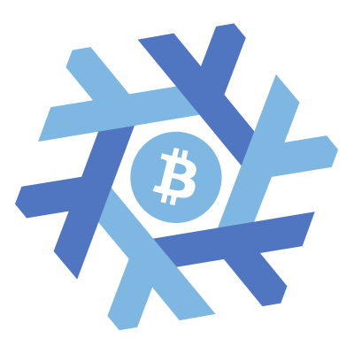

nix-bitcoin

About
nix-bitcoin is a collection of Nix packages and NixOS modules for easily installing full-featured Bitcoin nodes with an emphasis on security.
Features
- Bitcoin
- bitcoind - full node with outbound connections through Tor and inbound connections through an onion service.
- bitcoin-core-hwi - hardware wallet interface for bitcoin core.
- Lightning
- clightning - outbound connections through Tor, onion service announcable.
- clightning plugins - clboss, helpme, monitor, prometheus, rebalance, summary, zmq.
- lnd - outbound connections through Tor, onion service announcable.
- spark-wallet - minimalistic wallet GUI for c-lightning, accessible over the web or through mobile and desktop apps.
- lightning-charge - simple drop-in solution for accepting lightning payments with clightning.
- nanopos - simple Lightning zap point-of-sale system, powered by Lightning Charge.
- recurring-donations - module to repeatedly send lightning payments to recipients specified in the configuration.
- lightning-loop - non-custodial off/on chain bridge.
- Liquid
- elementsd - daemon for liquid sidechain.
- liquid swap - tool to swap issued assets on liquid using confidential transactions.
- Electrs
- electrs - electrum server written in rust, reachable over onion service.
- BTCPayServer
- JoinMarket
- joinmarket - CoinJoin implementation with incentive structure to convince people to take part. Automatic wallet generation. Plug and play yield generator.
- Other
- backups - daily duplicity backups of all your nodes important files.
- netns-isolation - isolates modules/services on a network-level in network namespaces.
nix-bitcoin demo node
This webpage is hosted inside an nginx namespace on a nix-bitcoin node running bitcoind, clightning, clboss, electrs, btcpayserver, and joinmarket. The node is deployed using btrfs on Hetzner Online.
clightning
Public Key: 029859bb9d3cde023d43b306f688f02bf821f91790a9fa65f7ff5eb9278074eec9
Tor v3: yd4yhi55hcovg2ep76bngt7nqkmxp6uc2f6rvgxd3bg7fesuy263ukyd.onion:9735
electrs
s3cqv57f3vvyrgwm7v3avkvkft5xesy27goaexkql6a55yevyi5bc3qd.onion:50001:t
JoinMarket Orderbook
A self-hosted JoinMarket orderbook can be found here.
Donate
You can donate to our nix-bitcoin hosted BTCPayServer here.